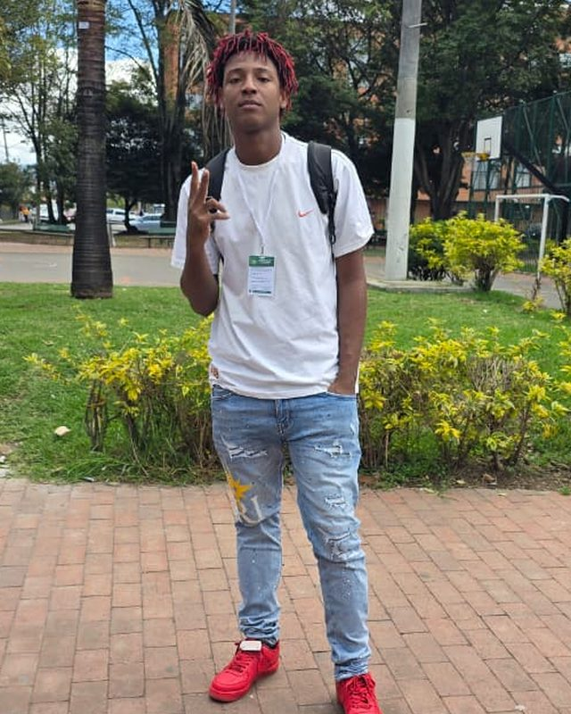
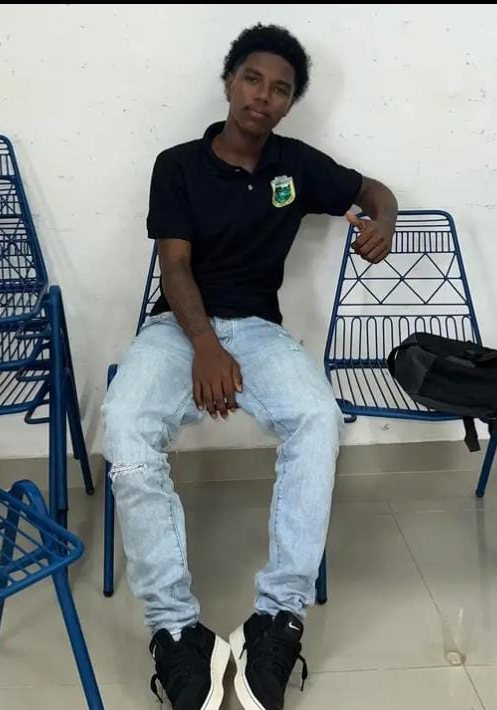

Perfil
Yulian Calixto Romaña Martínez es Jefe de Deporte de la Plataforma Municipal de Juventud de Riosucio, Chocó, para el período 2026–2028.
Datos
- HoyJefe de Deporte de la Plataforma Municipal de Juventud de Riosucio
- Período2026–2028
Equipo
Otros líderes

Leiner Andrés Mena Córdoba
Presidente de la Plataforma · Representante Legal de la AJPMJR
Ver perfil →
Jhon Yair Palacios Cetré
Jefe de Gabinete y Asesor de la Plataforma · Delegado Departamental del Chocó y Vocero Nacional
Ver perfil →Derlyn Andrés Asrilla Quinto
Vicepresidente de la Plataforma
Ver perfil →
Yoimar Luis Llorente Zúñiga
Vicepresidente Ejecutivo de la Plataforma
Ver perfil →Keilen Córdoba Palomeque
Secretario General de la Plataforma
Ver perfil →Arley Jecid Palacios Romaña
Fiscal de la Plataforma
Ver perfil →